Práctica 6.1 - Dockerización del despliegue de una aplicación Node.js
Introducción
En esta práctica, dockerizaremos una aplicación Node.js que interactúa con una API para gestionar un libro de direcciones almacenado en una base de datos PostgreSQL. El objetivo es ejecutar la aplicación en contenedores, aprendiendo a manejar Docker y Docker Compose para una configuración eficiente y modular.
Parte 1: Configuración inicial
Clonación del repositorio
Comenzamos clonando el repositorio del proyecto en nuestra máquina Debian:
git clone https://github.com/raul-profesor/DAW_practica_6.1_2024.git
cd DAW_practica_6.1_2024
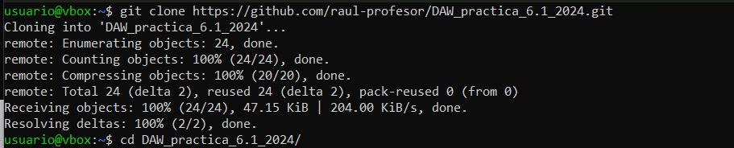
Instalación de Docker en el sistema
Luego tenemos que instalar Docker en nuestra maquina virtual ejecutando el comando:
sudo apt install -y docker.io
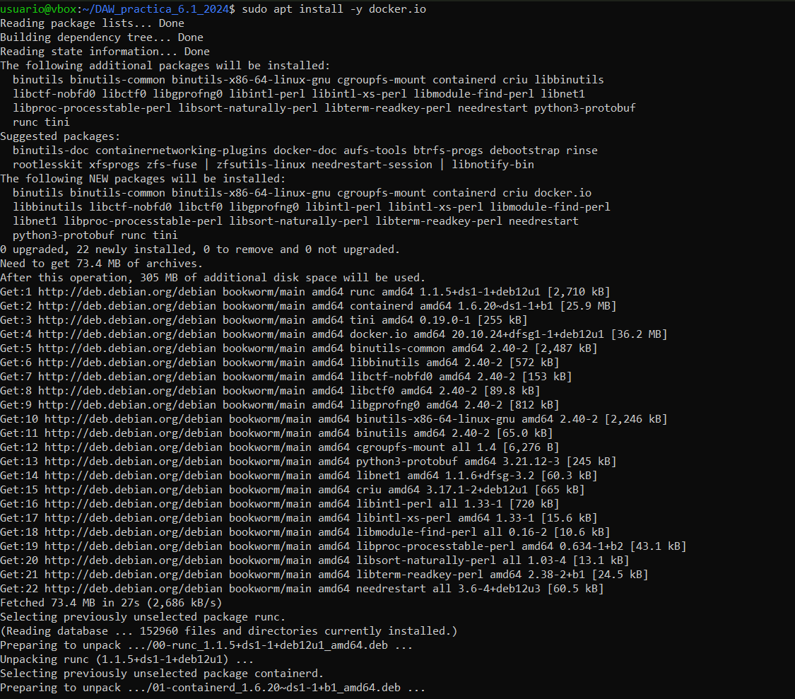
Creación del Dockerfile
El archivo Dockerfile será utilizado para crear la imagen del contenedor de la aplicación Node.js. Aquí está el contenido completo del archivo, con las instrucciones necesarias completadas:
# Utilizar la imagen base de Node.js
FROM node:18.16.0-alpine3.17
# Crear el directorio de la aplicación en el contenedor
WORKDIR /opt/app
# Copiar los archivos package.json y package-lock.json al contenedor
COPY src/package.json src/package-lock.json .
# Instalar las dependencias de la aplicación
RUN npm install
# Copiar el código fuente de la aplicación al contenedor
COPY src/ .
# Exponer el puerto 3000
EXPOSE 3000
# Comando para iniciar la aplicación en modo desarrollo
CMD ["npm", "run", "start"]
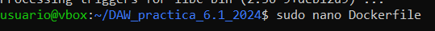 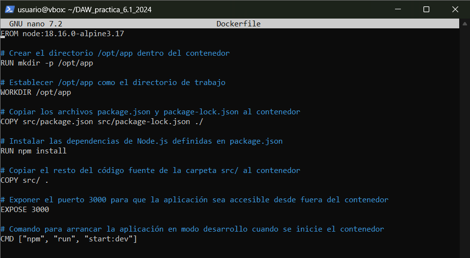
Construcción de la imagen de Docker
Construimos la imagen a partir del archivo Dockerfile. Asignamos el nombre librodirecciones a la imagen:
sudo docker build -t librodirecciones .
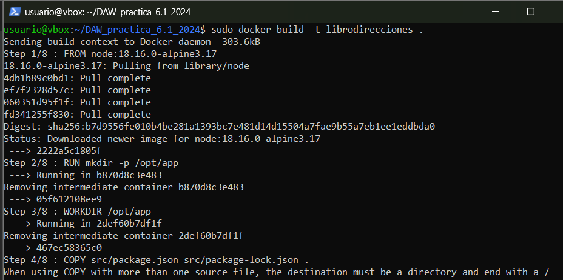
Ejecución del contenedor
Iniciamos el contenedor con el comando siguiente, exponiendo el puerto 3000 del contenedor en el puerto 3000 de la máquina anfitriona:
sudo docker run -p 3000:3000 -d librodirecciones
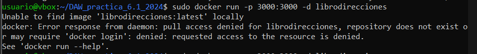
Si te da este error tienes que cambiar la configuración del Dockerfile y añadir una / al final de la línea:
COPY src/package.json src/package-lock.json ./
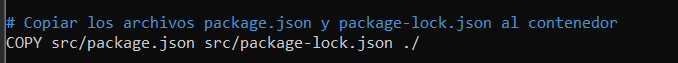
Volvemos a ejecutar el siguiente comando para que se puedan instalar las dependencias y se cree la imagen Docker.
sudo docker build -t librodirecciones .

Volvemos a intentar iniciar el contenedor y que escuche las peticiones en el puerto 3000.
sudo docker run -p 3000:3000 -d librodirecciones
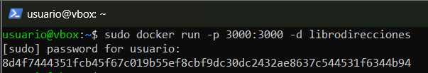
Comprobación de la configuración
Tras ejecutar todos los comandos, si intentamos acceder a http://192.168.9.147:3000 nos debería aparecer un mensaje de error de conexión.
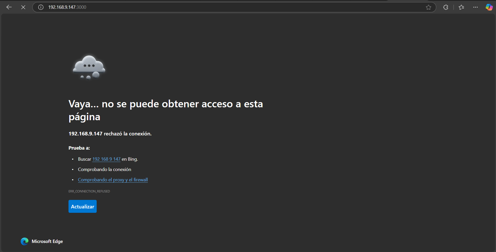
Parte 2: Configuración con Docker Compose
La conexión entre la aplicación y la base de datos PostgreSQL requiere que ambos contenedores estén en la misma red. Utilizamos Docker Compose para gestionar estos contenedores de manera eficiente.
Antes de seguir tenemos que tener instalado Docker Compose en el sistema. Para ello simplemente tenemos que ejecutar el siguiente comando:
sudo apt update
sudo apt install docker-compose
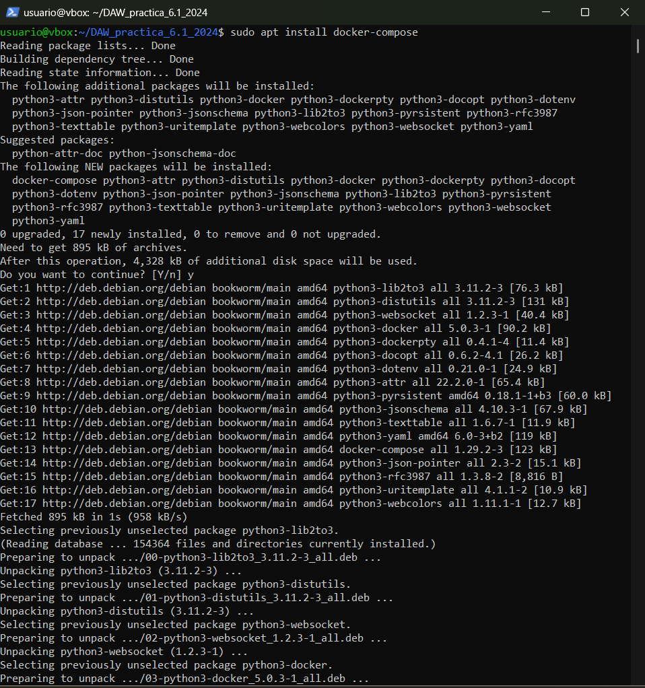
Archivo docker-compose.yml
Este archivo define los servicios para la base de datos PostgreSQL y la aplicación Node.js. A continuación, el contenido completo:
version: "3.9"
services:
postgres:
image: postgres:latest
environment:
POSTGRES_USER: postgres
POSTGRES_PASSWORD: postgres
ports:
- '5432:5432'
volumes:
- addressbook-db:/var/lib/postgresql/data
addressbook:
build:
context: .
environment:
DB_SCHEMA: postgres
DB_USER: postgres
DB_PASSWORD: postgres
DB_HOST: postgres
depends_on:
- postgres
ports:
- '3000:3000'
volumes:
addressbook-db:
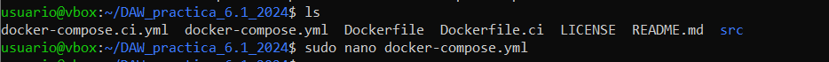 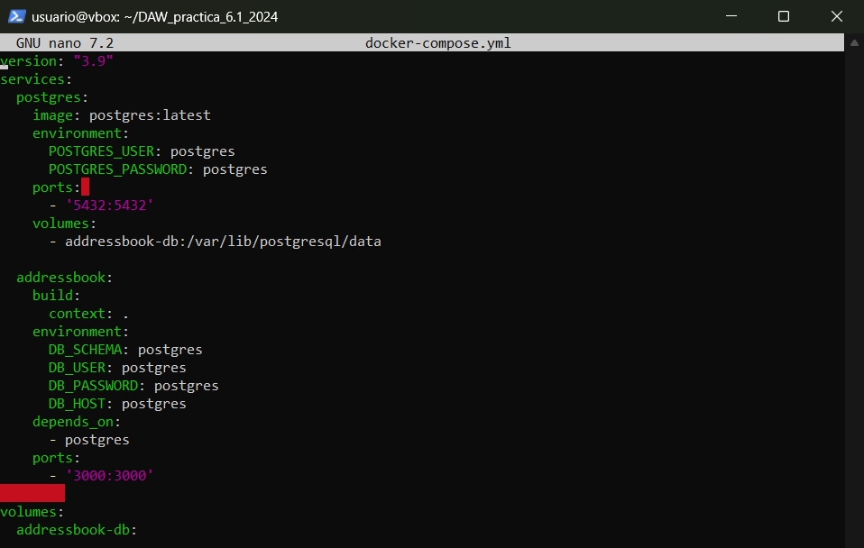
Resumen del flujo
postgres:
- Inicia una base de datos PostgreSQL en el puerto 5432.
- Guarda los datos de forma persistente en el volumen addressbook-db.
addressbook:
- Construye una aplicación (a partir del Dockerfile) que utiliza PostgreSQL como su base de datos.
- Se conecta a postgres usando las credenciales y configuración proporcionadas en las variables de entorno.
- Expone su interfaz en el puerto 3000.
Volúmenes:
- El volumen addressbook-db asegura que los datos de PostgreSQL sean persistentes y no se pierdan si el contenedor se elimina.
Construcción y levantamiento de los contenedores
Ejecutamos las migraciones necesarias para crear las tablas en la base de datos:
sudo docker-compose run addressbook npm run migrate
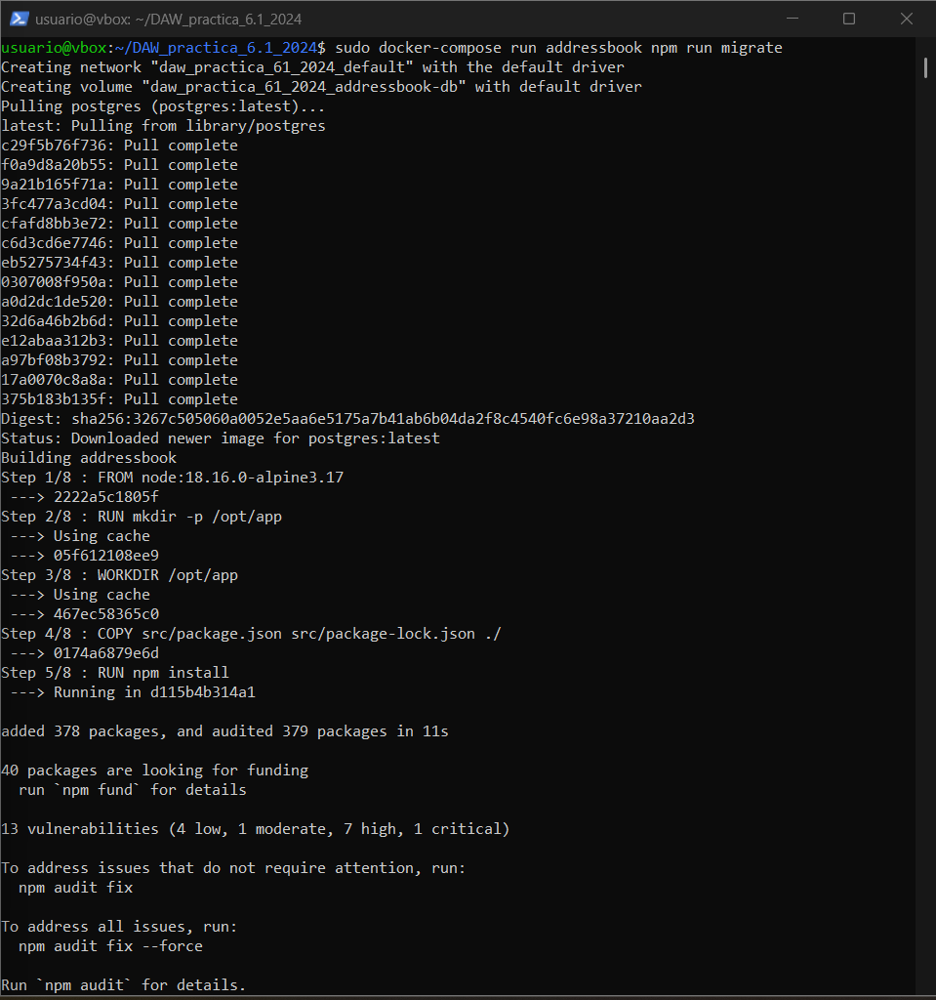
Construimos los contenedores con las imágenes y levantamos los servicios:
sudo docker-compose up --build -d
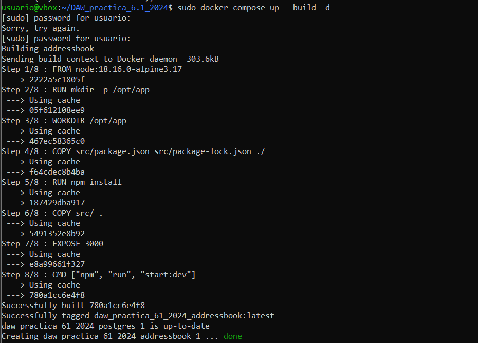
Comprobación
Hacemos un test para comprobar que se hayan levantado correctamente todos los servicios con el comando:
sudo docker-compose run addressbook npm test
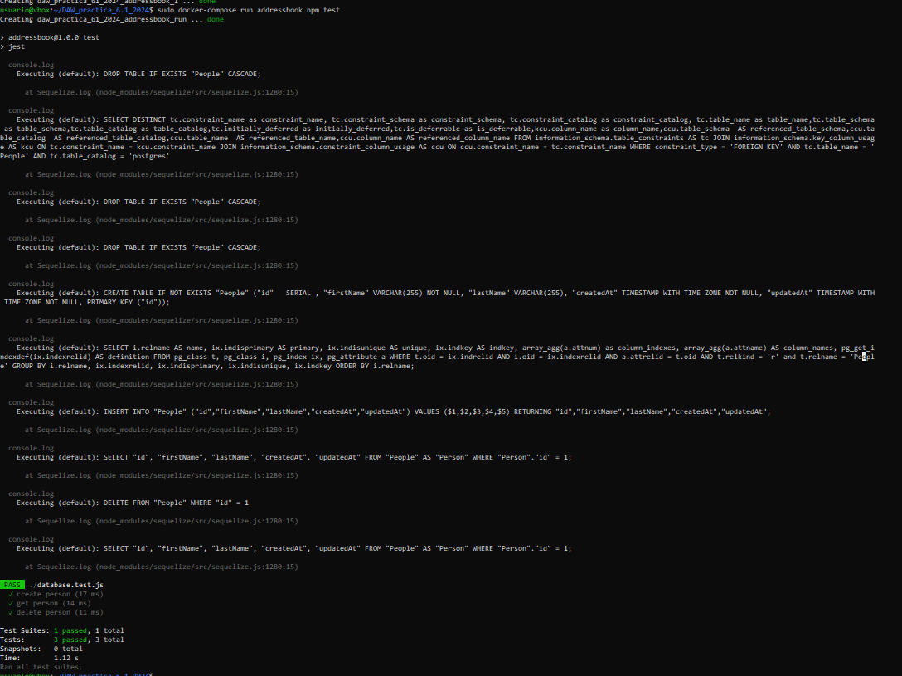
Parte 3: Pruebas de funcionamiento
La API expone los siguientes endpoints que podemos probar utilizando curl:
Añadir una persona al libro de direcciones
Comando:
curl -X PUT http://localhost:3000/persons -H 'Content-Type: application/json' -d '{"id": 1, "firstName": "Raúl", "lastName": "Profesor"}'
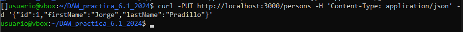
Obtener todas las personas
Comando:
curl -X GET http://localhost:3000/persons -H 'Content-Type: application/json'
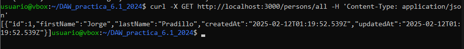
Obtener una persona por ID
Comando:
curl -X GET http://localhost:3000/persons/1 -H 'Content-Type: application/json'
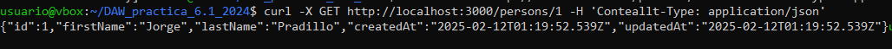
Eliminar una persona por ID
Comando:
curl -X DELETE http://localhost:3000/persons/1 -H 'Content-Type: application/json'
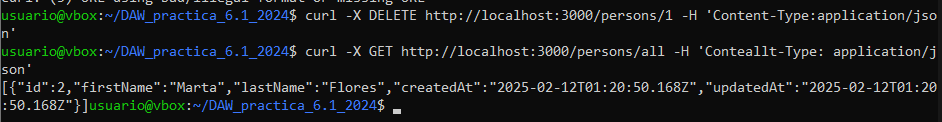
Author: Jorge Pradillo Hinterberger